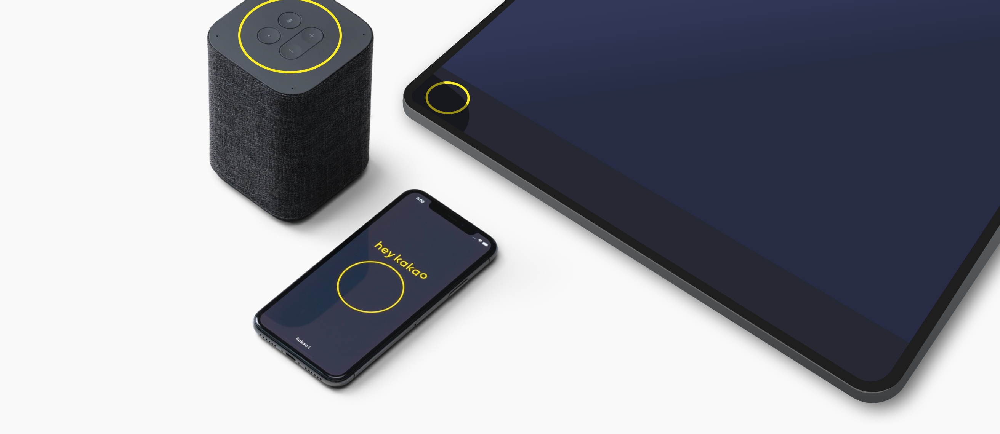
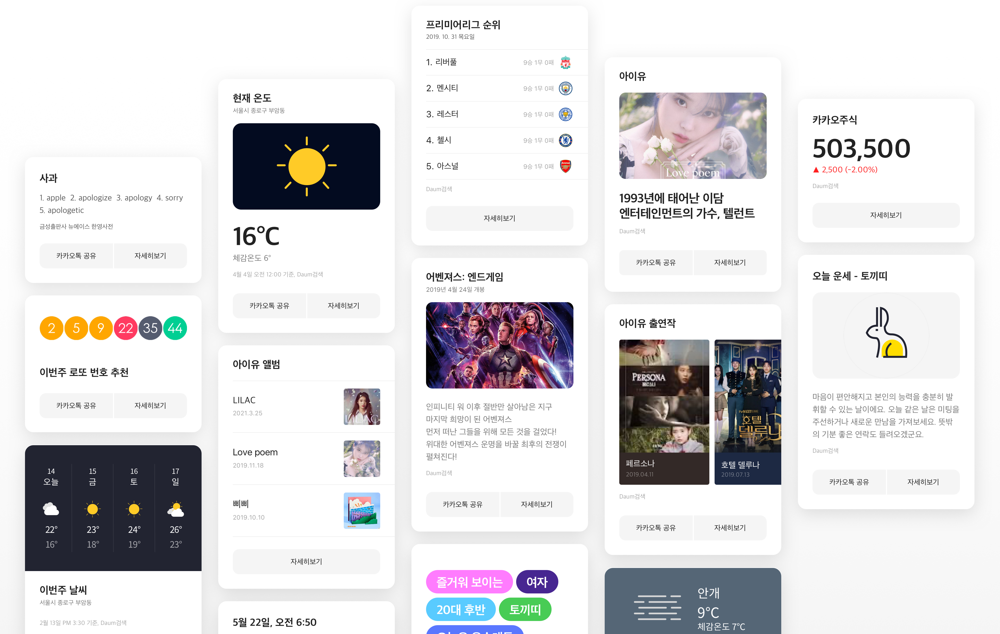

kakao i Service : Visual Components Design and Guide
Kakao
UI / UX Design Interaction
-
2018
-
2018

카카오 i 서비스를 SDK화 하기 위해
음성인식, 답변에 대한 구성 요소를
템플릿화하는 작업을 진행
Voice Agent
보이스 에이전트는 사용자의 음성 입력 수신, kakao i 음성 출력 등 음성 동작과 관련된 상태를 표시하는 UI입니다. 음성 동작이 이뤄지는 각 상태를 시각적으로 전달 및 브랜드 정체성을 담기 위해 노력하였다.Line Dot
입력 수신시 이퀄라이저 형태로 구성하여, 타 서비스에서 사용하여도 이질감 없도록 디자인하였다. 각 단계의 형태 변화가 커서 배경에 어떤 색상이 매칭되더라도 시각적으로 인지 할수 있도록 하였다.Yellow Ring
카카오 미니의 아이덴티티인 노란원을 유지하여 동일한 사용자 경험을 줄 수 있도록 디자인 하였으며, kakao i 브랜드 아이덴티티를 확실하게 반영하였다.View Template
뷰템플릿은 음성 답변을 시각적으로 보여주는 요소로, 모든 정보를 표현하기 보다는 음성답변을 보조하고 핵심 정보를 한눈에 볼수 있도록 디자인하였다. 또한 도메인 기획시 뷰템플릿이 서비스내에서 어떻게 표현되는지 샘플을 확인 할수 있는 웹사이트를 제작하였다.View Template Sample Site
Basic
가장 많이 사용되는 뷰템플릿 타입으로, 음성 답변에 대한 핵심 내용을 파악 할 수 있는 정답형 타입이다. 기존에 제작되었던 KeywordText, ImageText, FullText 3종류의 뷰템플릿을 하나로 정리하여 개발 및 관리에 효율을 높이도록 하였다.
title
Max 1 line recommended.
subtitle
multimedia
Image source is a URL
content
primaryText
Max 2 line recommended.
secondaryText
source
Max 1 line recommended.
button
Maximun 2 buttons
background
Customizable image or color.

List / Carousel
여러 항목을 파악할 수 있는 뷰템플릿 타입으로, List타입은 Horizontal, Vertical로 구분되며 이미지가 강조된 Carousel타입도 제작하였다.


title
Max 1 line recommended.
subtitle
item
head
Image source is a URL
multimedia
Image source is a URL
primaryText
Max 2 line recommended.
secondaryText
source
Max 1 line recommended.
button
Maximun 2 buttons
background
Customizable image or color.


Customize
기존에 Image타입의 뷰템플릿을 활용하여, 도메인에서 원하는 방향으로 커스텀하여 활용할 수 있는 타입으로 정리하였다.
title
Max 1 line recommended.
subtitle
content
custom section
Image source is a URL
source
Max 1 line recommended.
button
Maximun 2 buttons
background
Customizable image or color.


Template Layout
Kakao i가 SDK 형태로 다양한 서비스에 붙게 되면서, 여러가지 디바이스에 대응할 수 있는 레이아웃 구조가 필요했다. 이에 3가지 레이아웃(Card, Landscape, Portrait)으로 디자인 작업 및 가이드를 작성하였다. 현재 이 레이아웃 타입은 개발 적용이 되지 않은 상태이다.Card Layout
디바이스내 화면을 일부만 사용하여, 빠르게 정보를 파악할 수 있도록 구성한 레이아웃 타입으로 디스플레이가 큰 TV, 스마트미러에 적합한 타입이다. LG TV 및 LG 헬로비전에 적용되어 서비스되고 있다.screen
View Template
Landscape Layout
가로로 긴 디스플레이기기에 어울리는 레이아웃으로 Carousel 뷰템플릿 타입과 같이 좌/우 인터랙션에 적합하다. TV 리모컨으로 동작할 수 있도록 고려하여 디자인하였으나, 일정상의 이유로 적용되지는 않았다.screen
View Template
Portrait Layout
보여줄 항목이 많을 경우 활용하기 좋은 레이아웃으로 List타입의 뷰템플릿에 활용될 수 있도록 하였다. 세로 스크롤을 통한 인터랙션이 가능하도록 구성하였다.screen
View Template
- Card
- Landscape
- Portrait